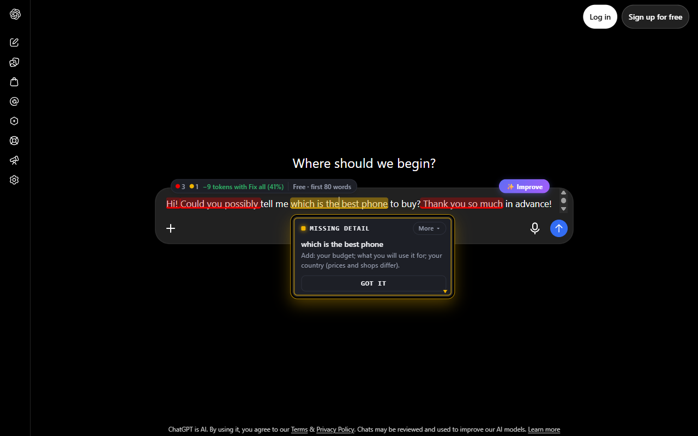
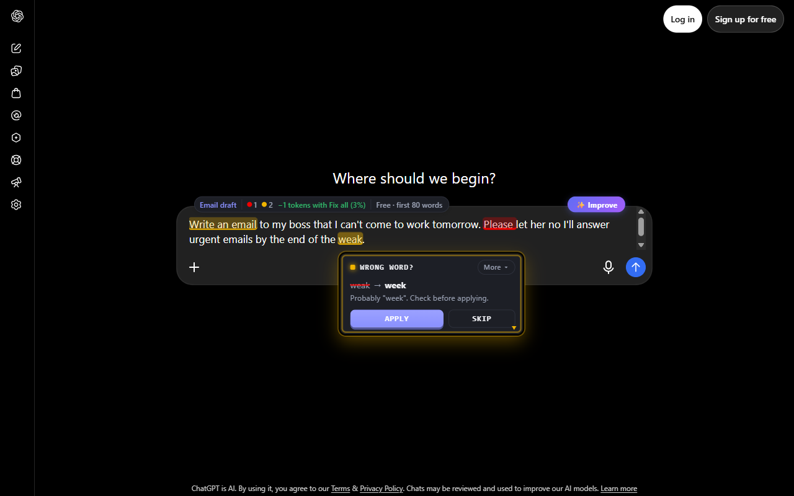

Spell check for AI prompts
Get the answer you wanted, the first time.
Prompt Refiner checks your prompt while you type and marks what will cost you a second message: the typo, the filler, and the detail the AI would otherwise have to ask you for.
- ChatGPT, Claude, Gemini and Grok
- Free
- Your prompts never leave your computer
Example prompt: "Hi! Could you possibly tell me which is the best phone to buy? Thanks so much!" Prompt Refiner marks 2 parts red and 1 yellow. Card: Missing detail, "which is the best phone". Add: your budget; what you will use it for; your country (prices and shops differ).
How it works
Three colours, like a spell checker.
Marks appear as you type. Click one to see why, and fix it in one click. Nothing changes until you choose.
Red
Not needed
Typos and filler the AI doesn't need. Removing it changes nothing about the answer.
Could you possibly…Yellow
Missing or unclear
What the AI would have to ask you, or guess. Adding it now saves a follow-up.
the best phone → your budget?Green
Already good
Details that help the AI give you a precise answer, so you learn what works.
in a table, for beginners- Type as usual. Marks appear in the prompt box while you write.
- Click a mark. A small card says why, in one line.
- Fix it or skip it. Then send. You're always in charge.
One real example
The same question, before and after.
Without
You"hi! can you please tell me which is the best laptop to buy? thanks so much"
AIPremium picks well over a student budget, then a list of questions: what's your budget, what will you use it for, Apple or Windows…
…and now you type it all again
2 / 5 · needs a second message
With Prompt Refiner
You"Which is the best laptop to buy? My budget is about $800, I'm a university student (notes, Office, some light photo editing), and I live in Israel."
AIThree specific models around ₪2,700–3,000 at Israeli shops, a clear top pick, and what to look for in the screen for photo editing.
5 / 5 · done in one message
Tested on ChatGPT
Better first answers, fewer follow-ups.
40% → 96%
first-answer quality across 11 everyday tasks
10 → 2
tasks that still needed a follow-up message
0
prompts sent anywhere: every check runs on your device
Our own test, November 2026: each task sent to ChatGPT as written, and again after following the marks. Answers scored against checklists written before any answer was seen. Results depend on answering the questions it asks.
What it catches
The things that cost you a second message.
Each one is underlined in its colour, right in the prompt box.
- Missing details for everyday requestsRecipes, trips, gifts, phone and computer problems, health questions, emails, cards and more
- "Summarize this" with nothing pastedThe AI would ask you to paste the text first
- Instructions that clash"very detailed but also short", "about 500 words but no more than 300"
- Real words in the wrong place"by the end of the weak", "can you right something"
- Typos and missing apostrophesAnd it leaves file names and tech words alone
- Filler and politeness"Dear ChatGPT, I hope this finds you well…"
- Template blanks left in"[PRODUCT NAME]" copied from the internet
- What you already did wellSo you learn what a clear prompt looks like
In action
Right where you type.



Private by design
Your prompts stay yours.
Never leaves your computer. No servers, no account, no tracking.
One permission: local storage, for your settings.
Never sends for you. It edits your prompt only when you click a fix.
Plans
Free to use. More on the way.
Free
- The first 80 words of every prompt, checked as you type.
- Every kind of mark: red, yellow and green.
- Works on ChatGPT, Claude, Gemini and Grok.
Premium Soon
- Checks whole prompts, however long.
- Adds an AI rewrite.